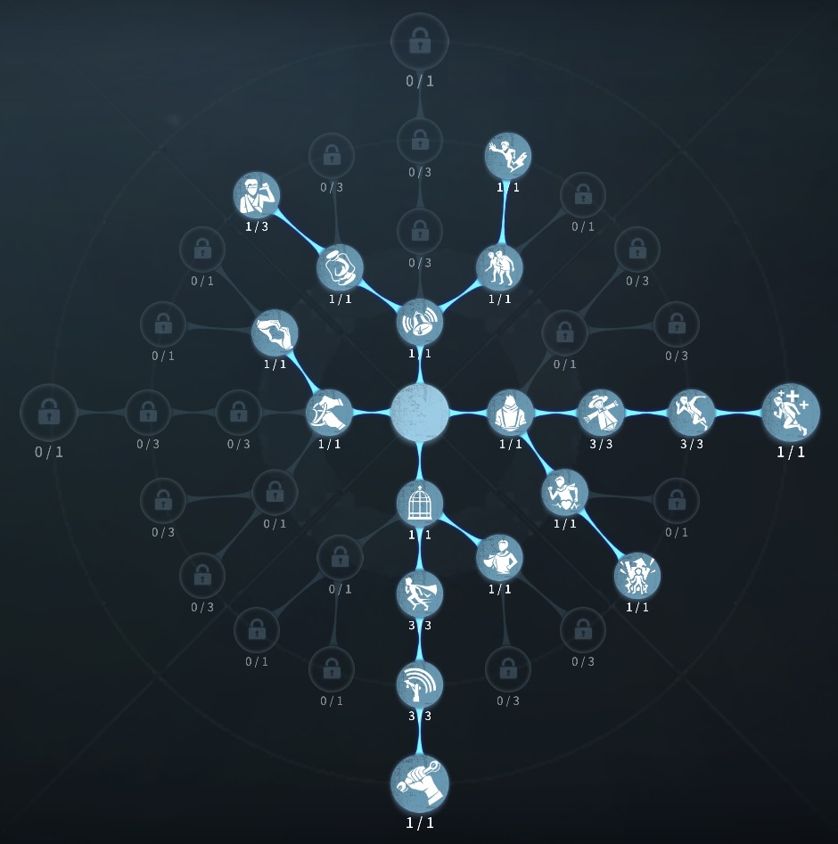
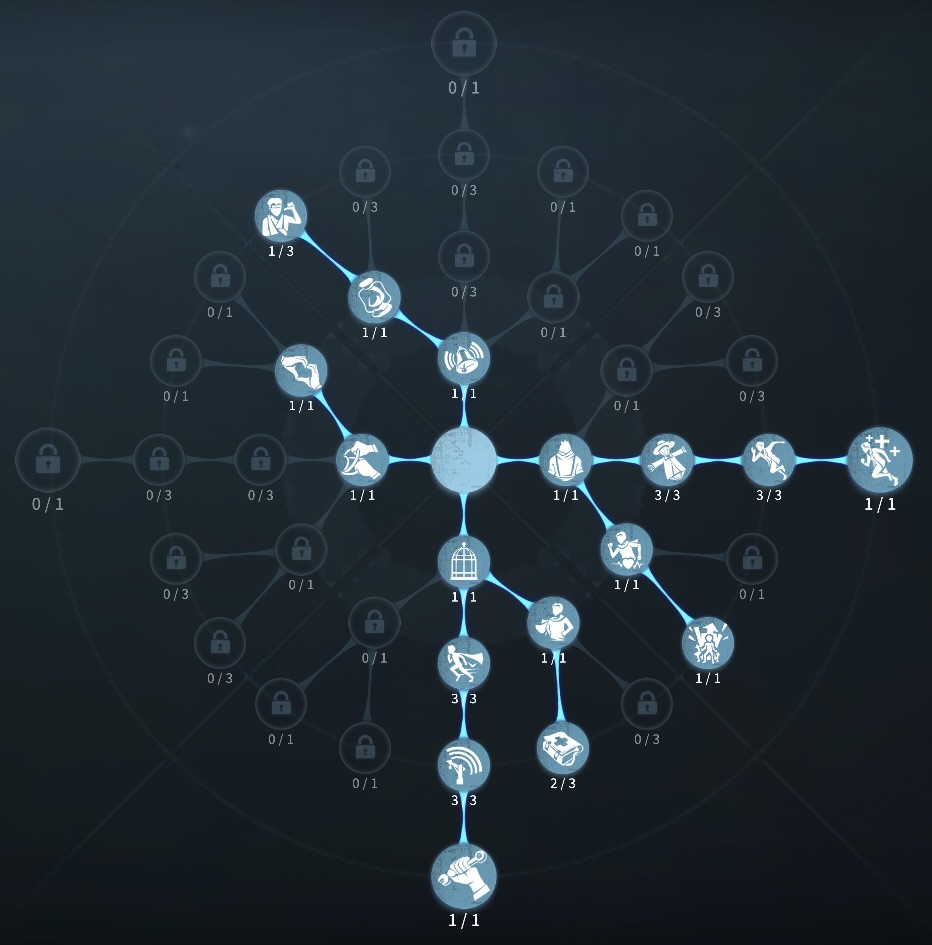

野人の評価
騎乗後野人は電光石火
外在特質と特徴
特質1:野性の絆
・野人の移動速度は4％低下する。・10秒間、ハンターの耳鳴りとリッスンの効果を無効化する。騎乗中、騎乗クールタイム中は使用できない。
・イノシシに乗ると怒気値ゲージが60％溜まり、毎秒怒気値は10％溜まる。怒気値により移動速度が上昇する。
・怒気値がMAXの時13mタックルができるようになる。ハンターに向かって走るとゲージの溜まる速度が60％上昇する。タックルでハンターが障害物に衝突した場合タックルのクールタイムがリセットされ怒気値が80％溜まり、当たらなければリセットされず40％溜まる。
・タックルをすると全体力ゲージの5％分が減る。体力がなくなるとイノシシから降りる。イノシシの乗れる時間の最大秒数はイノシシに乗る度に50/40/25秒と減少する。
自ら騎乗を終了した場合の騎乗クールタイム：30秒
他の要因で騎乗が終了した場合の騎乗クールタイム：60秒
・ハンターがサバイバーを風船にする瞬間にタックルすることで風船救助ができ、それ以外のタイミングではサバイバーの風船抵抗進度を10％上昇させる。
特質2:自然守護
・イノシシに乗っている間ハンターの攻撃はイノシシが代わりに食らい2発まで食らうことができるが、ハンターは攻撃硬直が発生しない。特質3:野生の勘
・イノシシに乗っている間、一部の低い地形を乗り越えることができ、乗り越え速度が10％上昇する。足跡の持続時間は2秒増加する。特質4:機械音痴
・解読速度25％低下する。特徴
耐久力の高く安定感があるサバイバーイノシシに騎乗している時移動速度が速い。ハンターは騎乗中の野人に追いつくことは難しい。
耐久力が高いため中間で狩られる心配がほぼ0に近いので安定感がある。
騎乗後救助によるDDの可能性が少しある。
基本的な立ち回り方
1. 追われた時
ハンターにファーストチェイスで野人を追うメリットがどこにもない。
もし追ってくる場合、騎乗後のタゲチェンがほとんど。
追ってくるのであれば、イノシシに騎乗しハンターのやる気がなくなるまでチェイスしてやりましょう！
2. 追われない時
解読をする。
救助に行く際、救助に間に合わないor中間で見つかるなどの心配がある場合騎乗して向かおう。
救助に間に合う、中間まで見つからず椅子前までいける場合救助後に騎乗しよう。（DDを避けるため）
おすすめの内在人格
危機一髪型人格
この内在人格は、共生効果をつけることで野人のデバフ補い救助を間に合わせる。観客効果を採用することで2回目の救助でも良いようにする人格

危機一髪型人格
この内在人格は、癒合と避難所を採用することで、治療時間を短くし、観客効果で解読速度を早める人格


みんなのコメント